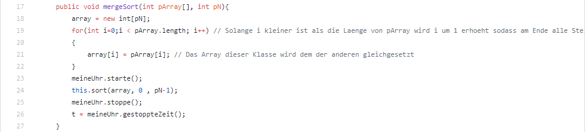
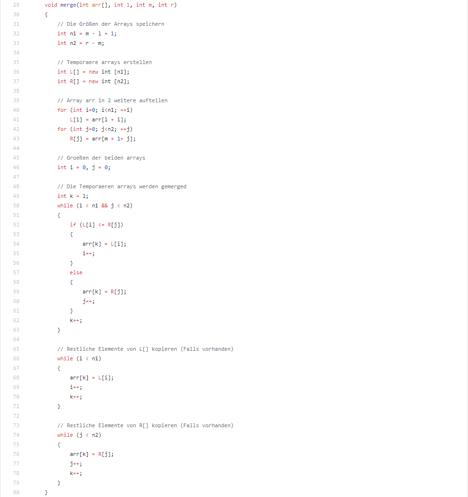
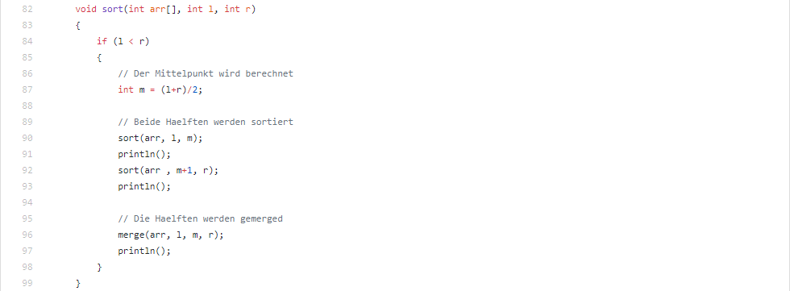
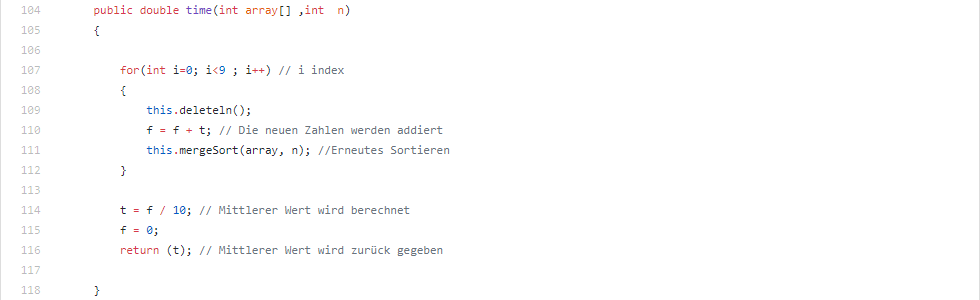

Dokumentation: MergeSort
Die Klasse MergeSort erbt aus der Klasse Sortieralgorithmen und dient der Sortierung durch das MergeSort Verfahren.
Die Funktion: mergeSort(int pArray, int Pn)

Diese Funktion wird von SuMAnwendung ausgeführt, wenn der Knopf "MergeSort" betätigt wird. In den ersten
paar Zeilen
wird durch eine for Schleife bewirkt, dass das Array der Klasse SuMAnwendung, also die Zufälligen
Zahlen dem zuvor erstellten Array gleichgesetzt werden und man
es für die Sortierung benutzen kann. Danach
wird die Uhr gestartet und der Befehl sort() löst eine Kettenreaktion aus und sortiert das Array. Dann wird die Zeit
wieder angehalten und auf dem Bildschirm angezeigt.
Die Funktion: merge(int arr[], int l, int m, int r)

Diese Funktion wird aufgerufen, nachdem die sort() Funktion ausgeführt wurde. Sie dient dazu, die aufgeteilten
Arrays wieder zusammen zu fuegen.
Die Funktion: sort(int arr[], int l, int r)

In der Funktion sort() wird erst ein Mittelwert berechnet. Danach wird mit Hilfe eines Rekursiven Aufrufs das Array
immer weiter aufgeteilt und sortiert.
Am Ende dieses Prozesses wird alles wieder zusammen gemerged mit Hilfe von
merge(). Außerdem wird nach jedem sortier-Schritt das Array geprinted und der genaue Prozess offen gelegt.
Die Funktion: time(int array[] ,int n)

Die Funktion time() berechnet durch mehrfaches hintereinander-ausführen und Zeit stoppen einen Mittelwert, der
benötigten Zeit des Algorithmus.
Es ist nochmal deutlich genauer, als nur einmalig die Zeit zu stoppen.
by Paul Helmes